对程序员提到 Monad，话题多半会落到效应；对数学家而言，Monad 关乎代数。以后会讨论代数——它在编程中扮演重要角色——但先建立一些代数与 Monad 关系的直觉。现在的论证有点挥手式，请暂且容忍。
代数关乎创建、操纵和求值表达式。表达式由运算符构成。考虑简单表达式：
它由 x 这样的变量、1 或 2 这样的常量，以及加法、乘法等运算符绑定而成。程序员常把表达式想成树。
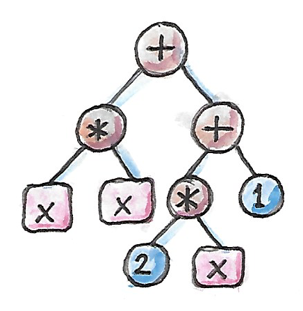
树是容器，因此更一般地说，表达式是存储变量的容器。范畴论用自函子表示容器。若给变量 x 分配类型 a，表达式类型就是 ma，其中 m 是构造表达式树的自函子。（具有非平凡分支的表达式通常由递归定义的自函子创建。）
表达式最常见的操作是什么？是代换（substitution）：用表达式替换变量。例如，可在上例中用 y-1 替换 x，得到：
这里发生的是：取 ma 类型表达式，应用 a→mb 类型的变换（b 表示 y 的类型），结果是 mb 类型表达式。展开写就是：
没错，这就是 Monad bind 的签名。
以上只是动机。现在进入 Monad 的数学。数学家使用不同记法：偏爱字母 T 表示自函子，用希腊字母 μ 表示 join、η 表示 return。join、return 都是多态函数，因此可以猜到它们对应自然变换。
所以在范畴论中，Monad 定义为配备一对自然变换 μ、η 的自函子 T。
μ 是从函子平方 T² 回到 T 的自然变换。平方只是函子与自身复合 T∘T（只有自函子才能做这种平方）：
该自然变换在对象 a 处的分量是：
在 Hask 中，这直接翻译成 join 的定义。
η 是恒等函子 I 与 T 之间的自然变换：
因为 I 对对象 a 的作用就是 a，η 的分量为：
它直接翻译为 return。
这些自然变换还必须满足附加定律。一种看法是，这些定律让我们能为自函子 T 定义 Kleisli 范畴。回忆 a、b 之间的 Kleisli 箭头定义为态射 a→Tb。两支箭头的复合（写作带下标 T 的圆圈）可用 μ 实现：
其中：
g:b→Tc
这里 T 是函子，所以能应用于态射 g。换成 Haskell 记法更容易辨认：
f >=> g = join . fmap g . f或者按分量写：
(f >=> g) a = join (fmap g (f a))在代数解释中，这只是复合两次连续代换。
要让 Kleisli 箭头形成范畴，希望复合满足结合律，并让 ηa 成为对象 a 上的恒等 Kleisli 箭头。这个要求可翻译成 μ、η 的 Monad 定律。但还有另一种推导方式，会让它们更像幺半群定律。事实上，μ 常称为乘法（multiplication），η 称为单位（unit）。
粗略地说，结合律要求把 T 的立方 T³ 约化为 T 的两种方式给出相同结果。左右两条单位律要求，把 η 应用于 T 后再用 μ 约化，会得到原来的 T。
这里有点棘手，因为我们在复合自然变换与函子，所以先复习水平复合。例如，T³ 可看作 T 接在 T² 后面的复合。可以对它应用两个自然变换的水平复合：
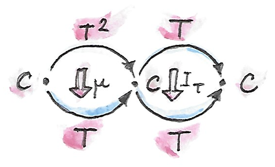
得到 T∘T，再应用 μ 约化为 T。IT 是从 T 到自身的恒等自然变换。常把这种水平复合 IT∘μ 缩写为 T∘μ。记法并不含糊，因为函子与自然变换本身不能复合，所以这里的 T 必然表示 IT。
也可以在（自）函子范畴 [C,C] 中画出：
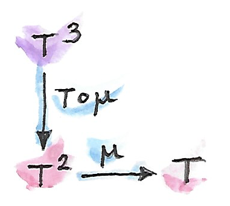
另一种方式，把 T³ 看作 T²∘T，对它应用 μ∘T。结果同样是 T∘T，再用 μ 约化为 T。要求两条路径结果相同。
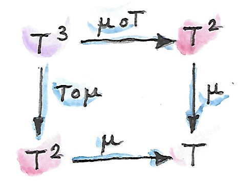
类似地，可对恒等函子 I 接在 T 后的复合应用水平复合 η∘T，得到 T²，再用 μ 约化；结果应等于直接对 T 应用恒等自然变换。类比地，T∘η 也应如此。
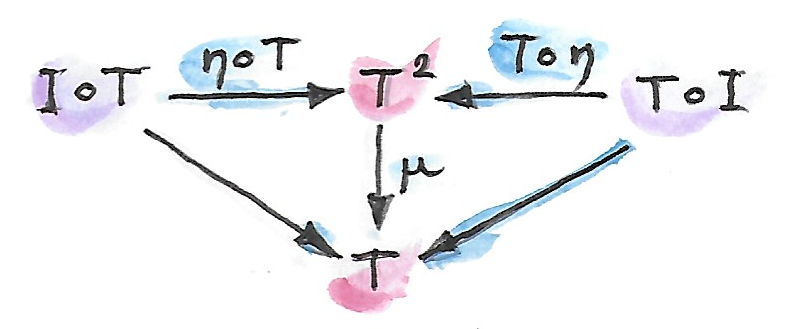
可以自行验证，这些定律保证 Kleisli 箭头复合确实满足范畴定律。
Monad 与幺半群的相似性非常醒目：都有乘法 μ、单位 η、结合律与单位律。但现有的幺半群定义太窄，无法把 Monad 描述为幺半群，所以要推广幺半群概念。
幺半范畴
回到幺半群的常规定义：带有二元运算与特殊单位元的集合。Haskell 用类型类表达：
class Monoid m where
mappend :: m -> m -> m
mempty :: m二元运算 mappend 必须满足结合律与单位律（与单位 mempty 相乘不做任何事）。
注意 Haskell 的 mappend 是柯里化的，可解释为把 m 的每个元素映射到一个函数：
mappend :: m -> (m -> m)这个解释产生了“幺半群是单对象范畴”的定义，其中自态射 m->m 表示幺半群元素。但因为 Haskell 内建柯里化，也完全可以从另一种乘法定义开始：
mu :: (m, m) -> m这里笛卡尔积 (m,m) 成为待相乘元素对的来源。
这个定义提示另一条推广路径：用范畴积替换笛卡尔积。从全局定义积的范畴开始，在其中选对象 m，把乘法定义为态射：
但有个问题：任意范畴中无法窥视对象内部，怎样选择单位元？有一个技巧。还记得选择元素等价于从单元素集合出发的函数吗？Haskell 中可把 mempty 定义替换为：
eta :: () -> m单元素集是 Set 中终对象，所以可自然推广到任何有终对象 t 的范畴：
这样无需谈论元素，也能选择单位“元素”。
与此前“单对象范畴”的幺半群定义不同，这里的幺半群定律不会自动满足，必须明确施加。要表述它们，先要建立底层范畴积自身的幺半结构。先回忆 Haskell 中怎样工作。
从结合律开始，Haskell 对应等式为：
mu x (mu y z) = mu (mu x y) z推广到其他范畴前，必须把它改写为函数（态射）相等，抽离其对单个变量的作用，也就是使用无点记法。知道笛卡尔积是双函子，左边可写作：
(mu . bimap id mu)(x, (y, z))右边为：
(mu . bimap mu id)((x, y), z)几乎达到目标。不幸的是，笛卡尔积并不严格结合——(x,(y,z)) 不等于 ((x,y),z)——所以不能直接无点地写：
mu . bimap id mu = mu . bimap mu id但二元组的两种嵌套同构。有一个称为结合子（associator）的可逆函数在二者之间转换：
alpha :: ((a, b), c) -> (a, (b, c))
alpha ((x, y), z) = (x, (y, z))借助结合子，可写出 μ 的无点结合律：
mu . bimap id mu . alpha = mu . bimap mu id单位律也可用类似技巧；新记法下为：
mu (eta (), x) = x
mu (x, eta ()) = x可改写为：
(mu . bimap eta id) ((), x) = lambda ((), x)
(mu . bimap id eta) (x, ()) = rho (x, ())同构 lambda、rho 分别称为左、右幺元子（unitor），见证单位 () 在同构意义下是笛卡尔积的恒等元：
lambda :: ((), a) -> a
lambda ((), x) = xrho :: (a, ()) -> a
rho (x, ()) = x单位律的无点版本因此是：
mu . bimap id eta = lambda
mu . bimap eta id = rho我们利用底层笛卡尔积本身在类型范畴中表现得像幺半乘法，为 μ、η 写出了无点幺半律。但要记住，笛卡尔积的结合律与单位律只在同构意义下成立。
事实证明，这些定律可推广到任何有积与终对象的范畴。范畴积确实在同构意义下结合，终对象也在同构意义下是单位。结合子与两个幺元子都是自然同构，定律可用交换图表示。
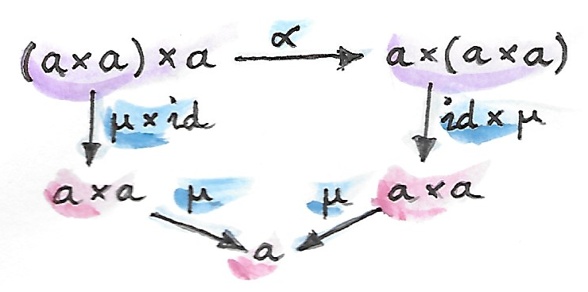
注意，因为积是双函子，它可以提升一对态射——Haskell 用 bimap 完成。
可以到此为止，说任何具有范畴积与终对象的范畴上都能定义幺半群：只要选对象 m 与满足幺半律的态射 μ、η。但还能更进一步。表述 μ、η 的定律并不需要完整的范畴积。回忆，积由使用投影的泛构造定义，而我们的幺半律表述从未使用任何投影。
表现得像积却不是积的双函子，称为张量积（tensor product），常用中缀运算符 ⊗ 表示。张量积的一般定义有点棘手，这里不必深究，只列出它的性质——最重要的是在同构意义下结合。
同样，不必让对象 t 是终对象。我们从没使用它的终对象性质——从任意对象到它存在唯一态射。只要求它与张量积协同良好，即它在同构意义下是张量积的单位。综合起来：
幺半范畴（monoidal category）是配备一个称为张量积的双函子的范畴 C：
以及一个称为单位对象的特殊对象 i，再加三个自然同构，分别称为结合子、左幺元子、右幺元子：
λa:i⊗a→a
ρa:a⊗i→a
（还存在一个简化四重张量积的相干条件。）
重要的是，张量积能描述许多熟悉的双函子：积、余积，以及马上会看到的自函子复合（还包括 Day convolution 等更奇特的积）。幺半范畴将在富范畴的表述中扮演关键角色。
幺半范畴中的幺半群
现在可以在更一般的幺半范畴背景中定义幺半群。先选一个对象 m。用张量积可形成 m 的幂：平方是 m⊗m。立方有两种形成方式，但通过结合子同构；更高次幂也类似（这正是需要相干条件之处）。形成幺半群需要选择两支态射：
η:i→m
其中 i 是张量积的单位对象。
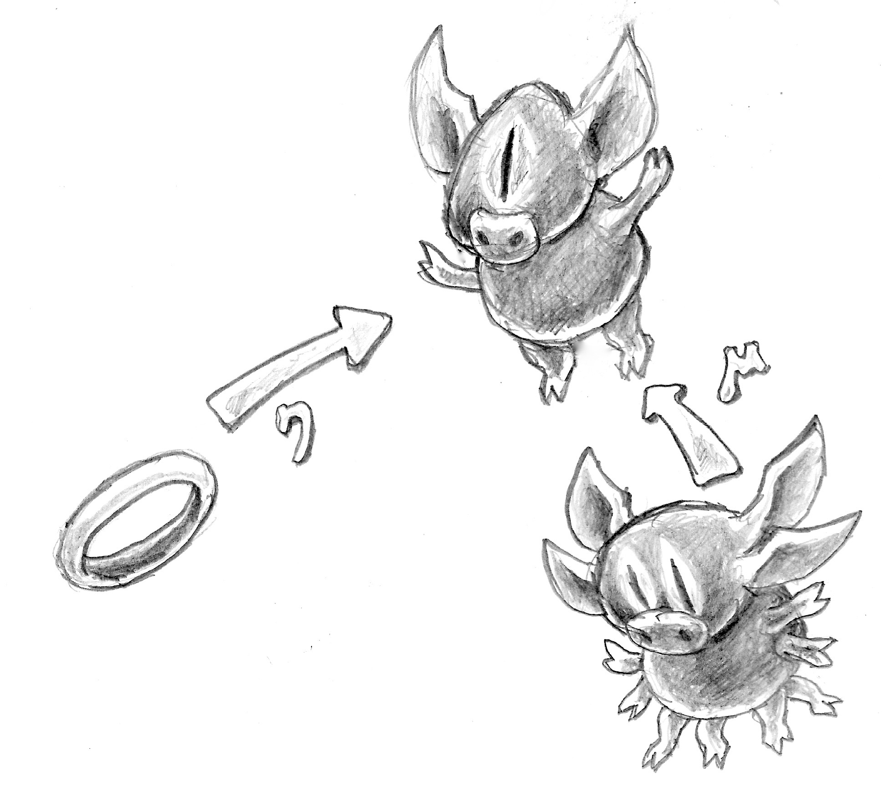
这些态射必须满足结合律与单位律，可用以下交换图表达：
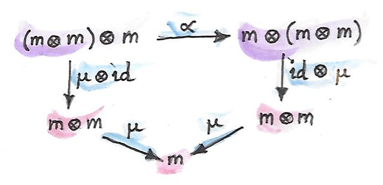
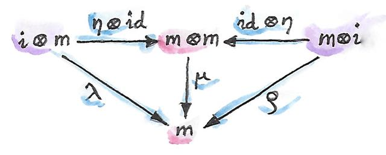
注意，张量积必须是双函子至关重要，因为需要提升态射对，形成 μ⊗id 或 η⊗id 等积。这些图只是此前范畴积结果的直接推广。
作为幺半群的 Monad
幺半结构会在意想不到的地方出现，其中之一是函子范畴。稍微眯起眼睛，函子复合就像一种乘法。问题是，并非任意两个函子都能复合——一个的目标范畴必须是另一个的源范畴。这只是通常的态射复合规则，而函子确实是 Cat 中的态射。但正如自态射总能复合，自函子也总能复合。对给定范畴 C，从 C 到 C 的自函子形成函子范畴 [C,C]。对象是自函子，态射是它们之间的自然变换。取其中任意两个对象 F、G，都能产生第三个对象 F∘G——二者复合得到的自函子。
自函子复合适合作张量积吗？首先要证明它是双函子，即能否提升一对态射——这里是自然变换。张量积版 bimap 的签名大致为：
把对象替换为自函子、箭头替换为自然变换、张量积替换为复合，就得到：
你也许认得，它正是水平复合的特殊情形。
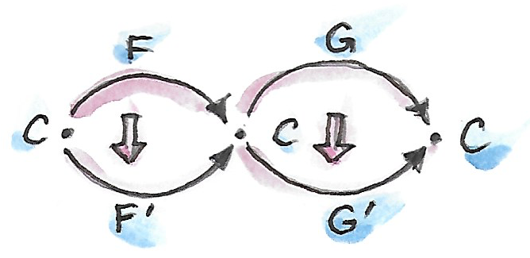
还有恒等自函子 I，可作为自函子复合——新张量积——的单位。而且函子复合满足结合律。事实上，结合律与单位律严格成立，无需结合子或两个幺元子。因此，自函子以函子复合作为张量积，形成严格幺半范畴（strict monoidal category）。
这个范畴中的幺半群是什么？它是一个对象——自函子 T——以及两支态射，也就是自然变换：
η:I→T
不只如此，下面是幺半群定律：
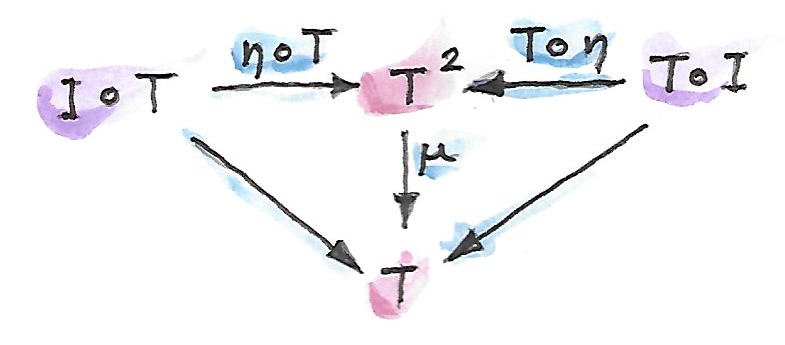
它们恰好就是此前见过的 Monad 定律。现在你理解 Saunders Mac Lane 的名言了：
总而言之，Monad 不过是自函子范畴中的幺半群。
你可能在函数式编程会议的 T 恤上见过这句话。
由伴随产生 Monad
伴随 L⊣R 是在范畴 C、D 之间往返的一对函子。它们有两种复合，产生两个自函子 R∘L、L∘R。按伴随定义，这些自函子通过单位与余单位两个自然变换连接恒等函子：
ε:L∘R→IC
立即能看出，伴随的单位就像 Monad 的单位。事实证明，自函子 R∘L 确实是 Monad；只需定义与 η 配套的 μ，即从该自函子的平方到自身的自然变换：
确实，可以用余单位压缩中间的 L∘R。μ 的准确公式由水平复合给出：
Monad 定律来自伴随单位、余单位满足的恒等式以及交换律。
Haskell 中不常看到由伴随导出的 Monad，因为伴随通常牵涉两个范畴。不过指数（函数对象）的定义是例外。形成这个伴随的两个自函子是：
Rb=s⇒b
它们的复合正是熟悉的 State Monad：
此前在 Haskell 中见过：
newtype State s a = State (s -> (a, s))再把伴随翻译为 Haskell。左函子是积函子：
newtype Prod s a = Prod (a, s)右函子是 Reader 函子：
newtype Reader s a = Reader (s -> a)它们形成伴随：
instance Adjunction (Prod s) (Reader s) where
counit (Prod (Reader f, s)) = f s
unit a = Reader (\s -> Prod (a, s))很容易确信，Reader 函子接在积函子之后的复合确实等价于 State 函子：
newtype State s a = State (s -> (a, s))正如预期，伴随的 unit 等价于 State Monad 的 return。counit 通过把函数作用于参数来求值，可认作 runState 的非柯里化版本：
runState :: State s a -> s -> (a, s)
runState (State f) s = f s（它是非柯里化的，因为在 counit 中作用于二元组。）
现在可把 State Monad 的 join 定义为自然变换 μ 的一个分量。为此需要三个自然变换的水平复合：
换句话说，需要把余单位 ε 偷渡过一层 Reader 函子。不能直接调用 fmap，因为编译器会选择 State 函子的实现，而不是 Reader 函子的实现。但回忆 Reader 的 fmap 只是左函数复合，所以直接使用函数复合。
首先剥掉 State 数据构造器，暴露 State 函子内部函数；用 runState 完成：
ssa :: State s (State s a)
runState ssa :: s -> (State s a, s)再与由 uncurry runState 定义的余单位左复合，最后重新套上 State 数据构造器：
join :: State s (State s a) -> State s a
join ssa = State (uncurry runState . runState ssa)这确实就是 State Monad 的 join 实现。
事实证明，不仅每个伴随都产生 Monad，反过来也成立：每个 Monad 都可因子分解为两个伴随函子的复合。不过这种分解不唯一。
下一章会讨论另一个自函子 L∘R。